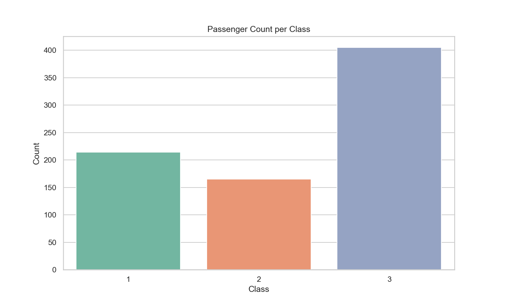
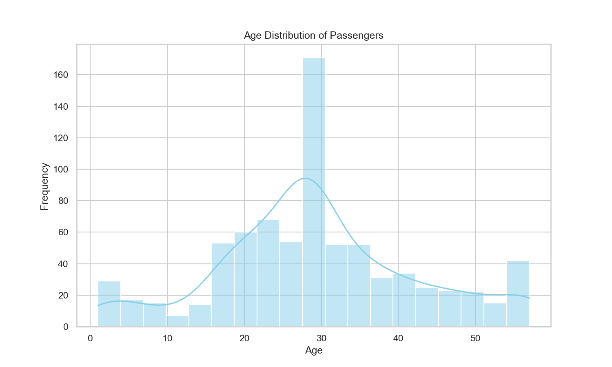
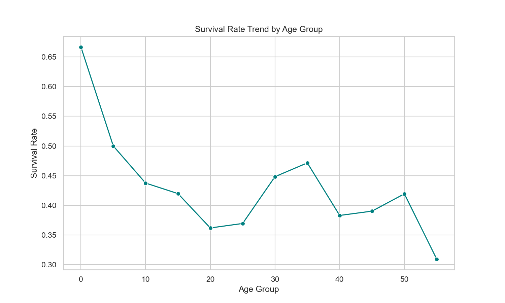
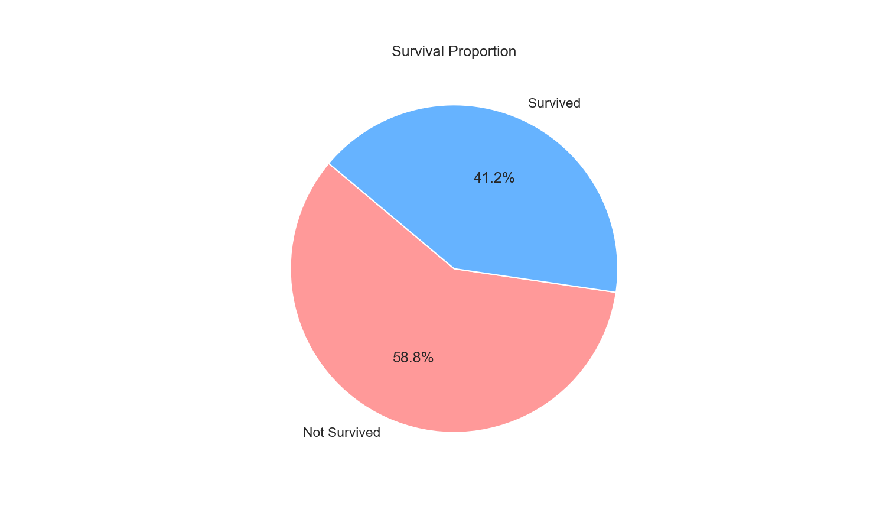
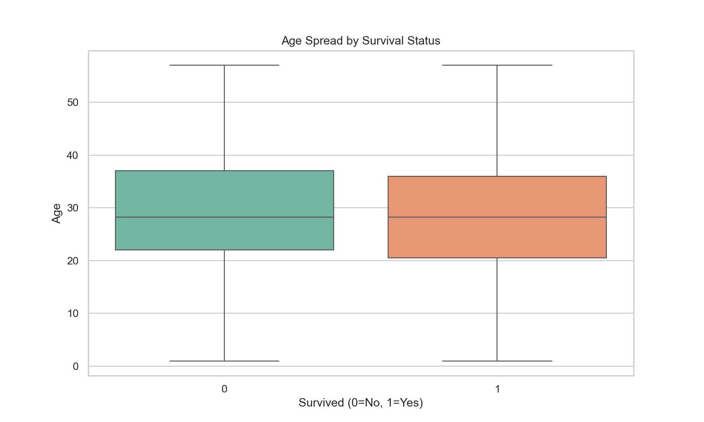
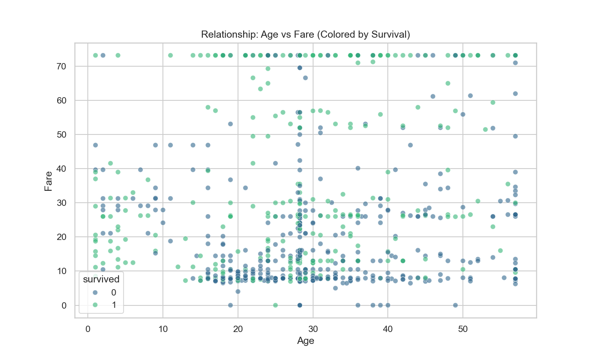
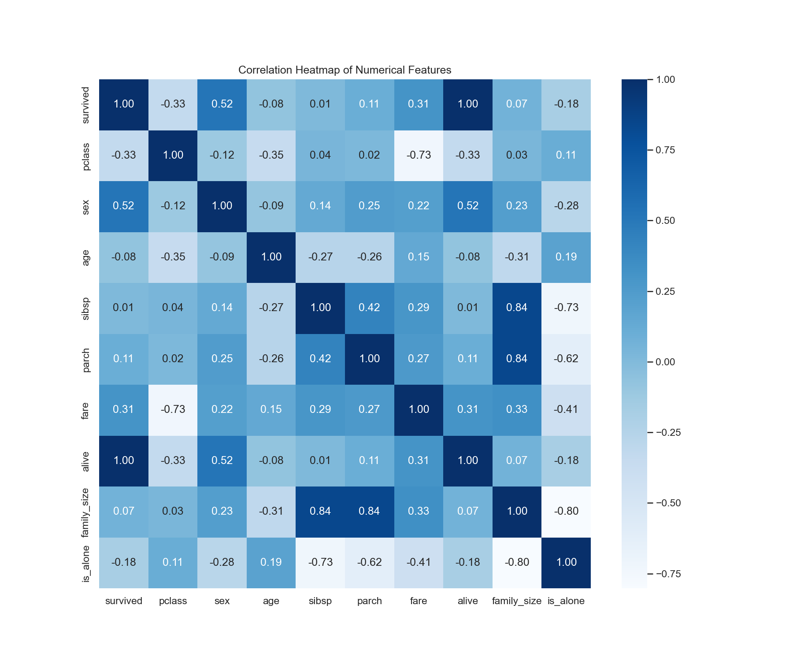

Dataset: Titanic Dataset | Date: 2026-04-25 12:18:11
Cleaning Methods: Missing numerical values were filled with medians. Categorical values were filled with modes. Outliers were capped using the Interquartile Range (IQR) method.






